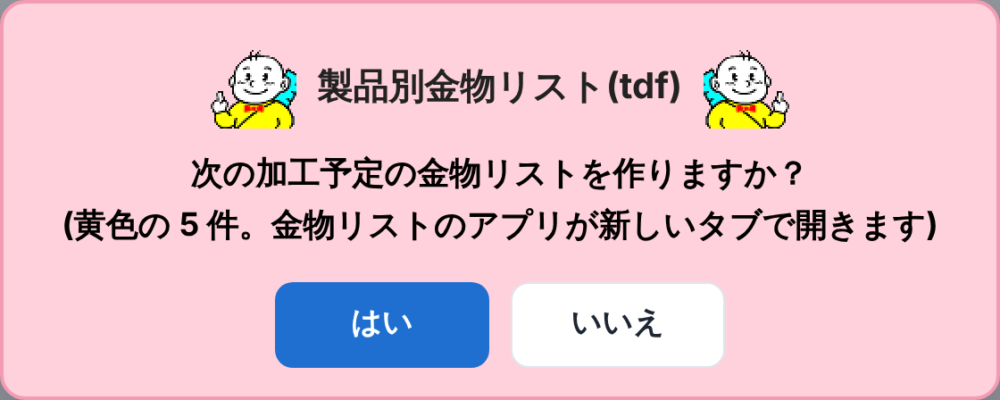
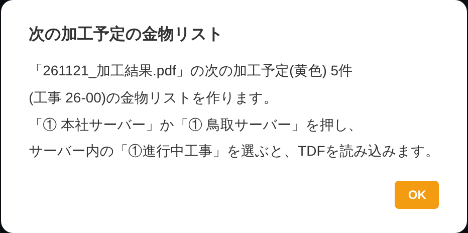
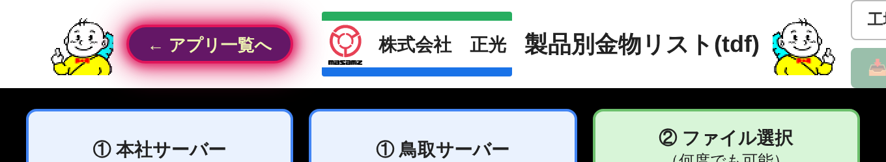
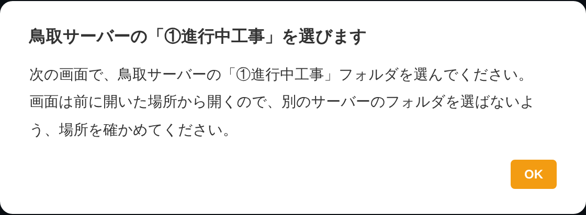
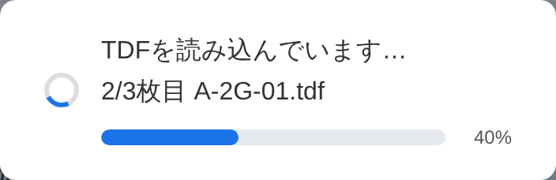
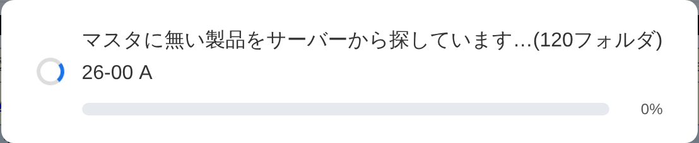
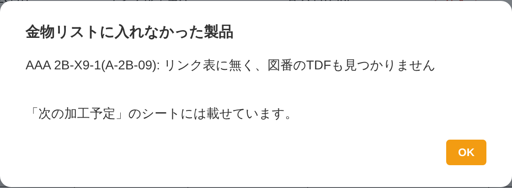
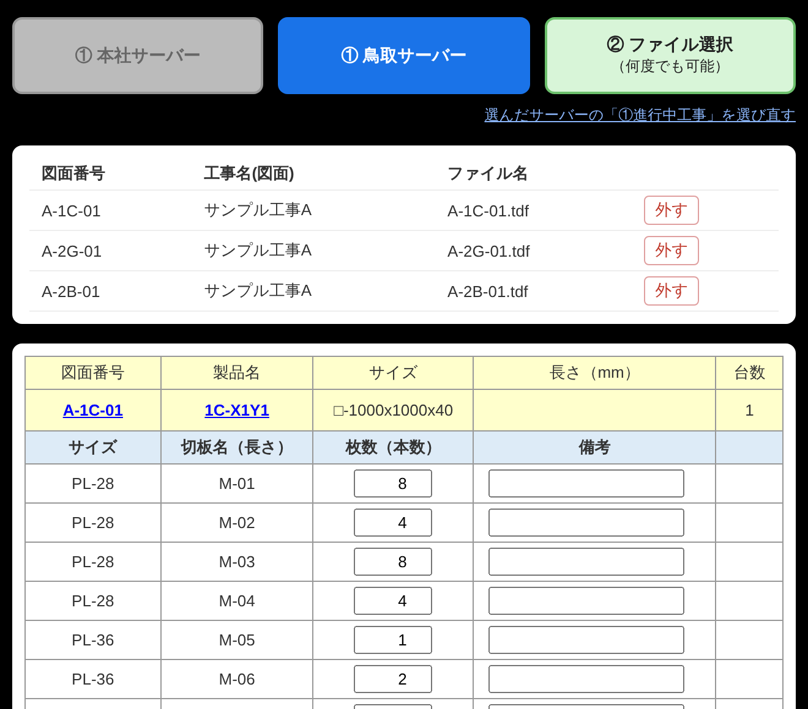

新機能次の加工予定の金物リスト作成 の使い方 1/5
加工結果PDFを取り込んだあと、予定表で台数が黄色(次の加工予定)の製品だけの金物リストを、そのまま作ってExcelでダウンロードできます。
1鳥取工場 生産状況加工結果PDFを取り込むいつもどおり、
PDFのダウンロードまで
進みます。
2鳥取工場 生産状況「はい」を押す「次の加工予定の
金物リストを作りますか？」
と聞かれます。
3製品別金物リスト(tdf)サーバーを選ぶ新しいタブで開きます。
「① 本社サーバー」か
「① 鳥取サーバー」を押し、
「①進行中工事」を選びます。
4製品別金物リスト(tdf)自動で読み込む実寸法師の図面(TDF)を
読んで、金物を拾います。
5ExcelExcelが届く工事ごとのシートに、
柱 → 大梁 → 小梁 の順で
並びます。
使えるパソコン・ブラウザ
パソコンの Chrome か Edge だけです(サーバーのフォルダを読むため)。
iPad・スマホでは、手順2の質問は出ません(生産状況の画面・PDFはいつもどおり使えます)。
対象になる製品
取り込んだPDFの「鳥取工場 加工予定表」で、台数のセルが黄色の行(次の加工予定)だけです。
黄色の行が1つも無いときは、手順2の質問は出ません。
「いいえ」を押したとき
金物リストは作りません。今までどおり、取込のお知らせが出て終わります。
ダウンロードされるPDFは、「はい」「いいえ」のどちらでも同じです。
手順1・2 生産状況で「はい」を押す 2/5
加工結果PDFを取り込み、PDFのダウンロードが終わると、次の質問が出ます。
APDFのダウンロードのあとに出る質問

- 「黄色の ◯ 件」は、予定表で台数が黄色の製品の数です。
- 「はい」 → 金物リストのアプリが新しいタブで開きます。
- 「いいえ」 → 金物リストは作らず、今までどおりのお知らせが出ます。
B金物リストのタブで、最初のお知らせ

- 取り込んだPDFの名前・件数・工事番号が出ます。
- 「OK」を押して、次のページの手順3へ進みます。
- 新しいタブが開かないときは、ブラウザがポップアップを止めていないか確かめてください(アドレスバーの右端に出る印から「常に許可」)。
手順3・4 サーバーを選んで読み込む 3/5
TDF(実寸法師の図面)が入っているサーバーを選びます。毎回選びます(前に選んだフォルダは使いません)。
A「① 本社サーバー」か「① 鳥取サーバー」を押す


- 「OK」のあと、フォルダを選ぶ画面が開きます。そのサーバーの「①進行中工事」フォルダを選んで「フォルダーの選択」→「表示」を許可します。
- 別のサーバーのフォルダを選ばないよう、場所を確かめてください。
B自動で読み込む(待つだけ)


- 製品ごとのTDFは、生産状況と同じ実寸リンク表の場所から読みます。
- リンク表に無い製品は、「マスタに無い製品をサーバーから探しています…」と出て、その工事のフォルダの中から図番が同じTDFを探します(同じ図番が2つ以上あれば、ファイル名の日付が新しいもの)。
- マスタが無い場合は
実際のフォルダから最新図を探し時間がかかる。
手順5 Excelが届く 4/5
読み込みが終わると、Excel「次の加工予定_金物リスト_日付_時刻.xlsx」が自動でダウンロードされます。
並び順(画面・Excelとも): 工事▶柱▶大梁▶小梁▶その他▶製品番号の順
Aシート１「次の加工予定」 … 黄色の製品の一覧
| 次の加工予定 |
| 予定日 | 件名 | 工事番号 | 製品名 | 台数 | 重量(t) | 図番 | 金物リスト |
|---|
| 2026-11-21 | AAA | 26-00 | 1C-X1Y1 | 1 | 8.20 | A-1C-01 | 作成 |
| 2026-11-21 | AAA | 26-00 | 2G-X2Y1 | 1 | 7.25 | A-2G-01 | 作成 |
| 2026-11-21 | AAA | 26-00 | 2B-X1-1 | 1 | 2.60 | A-2B-01 | 作成(図番で探したTDF) |
| 2026-11-21 | AAA | 26-00 | 2B-X1-2 | 2 | 2.99 | A-2B-01 | 作成(図番で探したTDF) |
| 2026-11-21 | AAA | 26-00 | 2B-X9-1 | 1 | 2.41 | A-2B-09 | リンク表に無く、図番のTDFも見つかりません |
次の加工予定26-0026-01
- 製品名・図番の青い字を押すと、実寸法師でその図面が開きます。
- 「金物リスト」の列: 作成 = 金物リストに入れた / 作成(図番で探したTDF) = リンク表に無く、サーバーから図番で探して入れた / 赤い字 = 入れなかった理由。
Bシート２以降 … 工事ごとの金物リスト
| 金物リスト |
| 工事番号 | 26-00 |
| 工事名 | サンプル工事A |
| 図面番号 | 製品名 | サイズ | 長さ(mm) | 台数 |
|---|
| A-1C-01 | 1C-X1Y1 | □-1000x1000x40 | 3248.1 | 1 |
| サイズ | 切板名(長さ) | 枚数(本数) | 備考 | |
|---|
| PL-28 | M-01 | 8 | | |
| FB-90x12 | M-12 | 4 | | |
| K-9 | 270 | 2 | 親綱掛けフック | |
| 小計 | 43 | | |
| 図面番号 | 製品名 | サイズ | 長さ(mm) | 台数 |
|---|
| A-2G-01 | 2G-X2Y1 | BH-1300x550x25x40 | 11726 | 1 |
| … 大梁 → 小梁 と続き、最後に「取り込んだTDF全ての総まとめ」… |
次の加工予定26-0026-01
- シートの名前は工事番号です。様式は、金物リストで1工事ずつ作るときと同じです。
- 枚数は1台あたりの枚数 × 予定の台数です。
結果を確かめる・困ったとき 5/5
Excelのダウンロードのあと、入れられなかった製品があればお知らせが出ます。金物リストのタブには、読んだ結果が表で残ります。
A入れなかった製品のお知らせ

- 件名・製品名(図番)と理由が出ます。Excelのシート１「次の加工予定」にも赤い字で載っています。
お知らせの理由と、することの例
リンク表に無く、図番のTDFも見つかりません … サーバーの工事のフォルダに、その図番のTDFがあるか確かめる。
TDFにこの製品がありません … 図面の製品名と、予定表の製品名が同じか確かめる。
TDFを開けませんでした … サーバーにつながっているか確かめ、もう一度「はい」からやり直す。
B金物リストの画面

- 読んだTDFの一覧と、製品ごとの金物が並びます(柱 → 大梁 → 小梁 の順)。
- もう一度作り直すときは、生産状況の画面で加工結果PDFを取り込み直して「はい」を押してください(金物リストのタブは閉じてかまいません)。